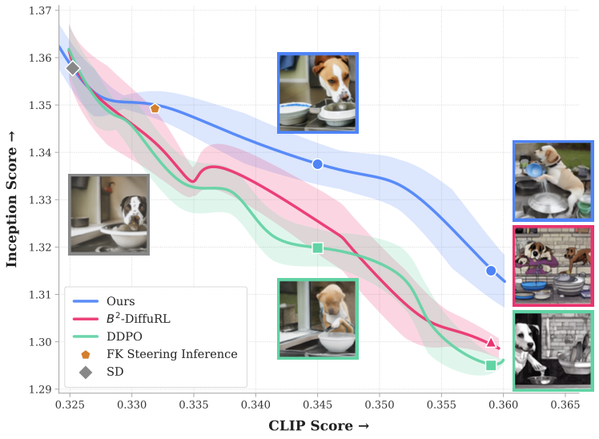
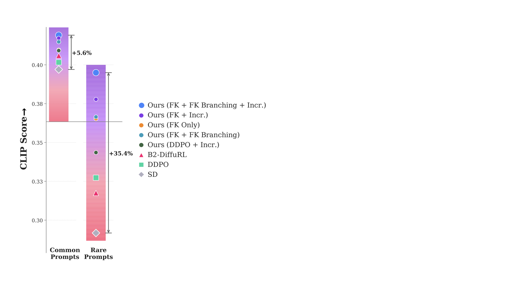
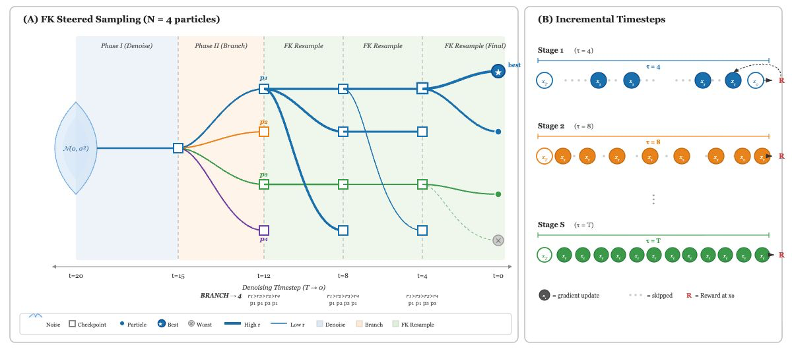
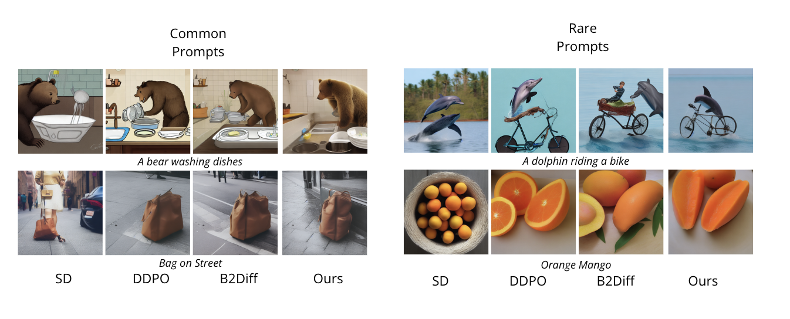
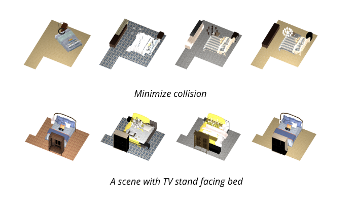
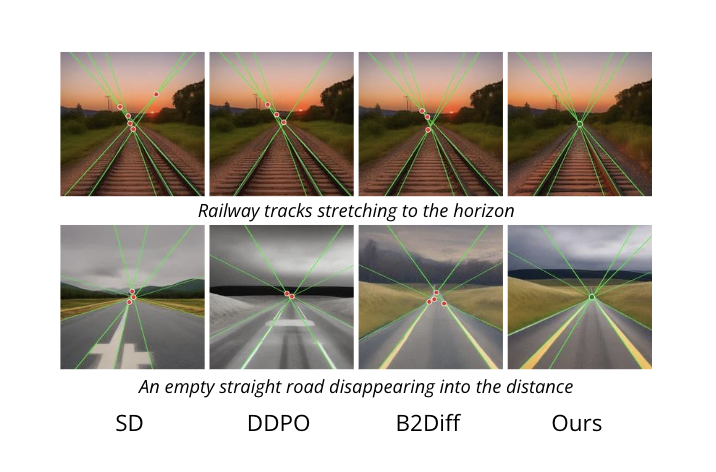

Motivation
Higher reward without giving up diversity.
RL fine-tuning of diffusion models (DDPO and its variants) tends to trade diversity and visual quality for reward. iADD reaches a better point on this tradeoff curve, and holds up on rare, hard-to-align prompts where the pretrained model's probability mass is thin.


Abstract
Reinforcement learning based post-training of diffusion models, such as Denoising Diffusion Policy Optimization (DDPO), optimizes a reverse diffusion process under a reward function. However, current approaches to reward optimization do so at the cost of diversity and quality. In this paper, we provide better tradeoffs through careful theoretical considerations and method design. We analyze the theoretical framework and mathematically demonstrate that only-latter-timestep updates of a diffusion model may be harmful for diversity, contrary to the conclusions presented in previous work. Additionally, we propose an incremental Feynman–Kac training procedure, grounded in strong theoretical foundations, to achieve the best-yet alignment–diversity tradeoffs. We perform extensive experiments and compare our method against related diffusion policy optimization approaches on three different tasks, and provide strong ablations for each component, validating performance gains in both alignment and diversity.
Method

Theory
Why sparse, early timesteps
For a fixed budget of optimized timesteps, we show uniform (early-inclusive) timestep sampling causes a strictly larger output perturbation than a late-only strategy (Generative Reach), and that sparse updates better preserve the prior's probability volume than updating all timesteps (Volume Preservation). Together these motivate an incremental curriculum: start with a sparse set of early, high-leverage timesteps and grow the active set as training stabilizes.
Component 1
Incremental timestep update
Each training stage samples and updates a randomly selected subset of denoising timesteps, with the subset size increasing across stages — from a handful of high-leverage steps to nearly the full trajectory.
Component 2
Feynman–Kac path guidance
A discrete-time Feynman–Kac particle filter branches and resamples partial denoising trajectories during training (not just at inference), using reward-derived potentials to prune unpromising paths and branch promising ones — improving sample efficiency and rare-event discovery.
Video
Results
Setup. We validate iADD on three tasks: text-to-image generation (Stable Diffusion v1.4 + LoRA, reward = CLIPScore), vanishing-point correction in generated images (reward = geometric consensus of converging line segments), and 3D indoor scene generation (continuous-domain MiDiffusion on 3D-FRONT, reward = spatial / collision constraints). Baselines: the frozen pretrained model, DDPO, and B²-DiffuRL (updates only late timesteps). We also compare against recent inference-time guidance (AIG) and GRPO-style methods (DanceGRPO, BranchGRPO), and test an iADD+GRPO hybrid.
Alignment, diversity and rarity across tasks
| Method | Image generation | 3D indoor scene | Vanishing point | ||||||
|---|---|---|---|---|---|---|---|---|---|
| Reward ↑ | IS ↑ | Rarity ↑ | AUC ↑ | Collision ↓ | CKL ↓ | Reward ↑ | IS ↑ | Rarity ↑ | |
| Pretrained (SD) | 0.3272 | 1.3514 | – | – | 53.87% | 30.48% | 0.6105 | 1.2735 | – |
| DDPO | 0.3417 | 1.2786 | 24.81% | 53.8% | 63.39% | 7.73% | 0.6815 | 1.2600 | 21.33% |
| B²-DiffuRL | 0.3452 | 1.2728 | 24.22% | 58.7% | 64.06% | 6.28% | 0.6486 | 1.2550 | 31.11% |
| iADD (ours) | 0.3553 | 1.3241 | 66.85% | 77.7% | 59.20% | 6.13% | 0.7763 | 1.2881 | 95.11% |
Each method evaluated at its best reward–diversity operating point. iADD gets the strongest reward–diversity AUC and rarity across all three tasks while matching or beating DDPO / B²-DiffuRL on raw reward.
Comparison with GRPO and inference-time guidance (Template 1: animal activities)
| Method | CLIP ↑ | IS ↑ | Rarity ↑ | AUC ↑ | LPIPS ↑ |
|---|---|---|---|---|---|
| AIG (inference-time) | 0.3526 | 1.3147 | 17.50% | – | 0.7531 |
| iADD | 0.3830 | 1.3035 | 78.33% | 83.7% | 0.7693 |
| DanceGRPO | 0.3886 | 1.2750 | 61.67% | 39.3% | 0.7624 |
| BranchGRPO | 0.3854 | 1.2917 | 56.67% | 43.73% | 0.7447 |
| iADD+GRPO | 0.4126 | 1.2942 | 88.33% | 73.3% | 0.7778 |
iADD's trajectory guidance and sparse curriculum are complementary to the underlying policy optimizer: combining them with GRPO raises CLIPScore and rarity further while improving LPIPS diversity.
Qualitative results



BibTeX
@misc{neupane2026iadd,
title = {iADD: Improving Alignment and Diversity in Diffusion Policy Optimization},
author = {Neupane, Ashok Prasad and Adhikari, Saugat and Paudel, Pramish
and Chhatkuli, Ajad and Paudel, Danda Pani},
year = {2026},
note = {Preprint},
url = {https://github.com/Saugat2002/iADD}
}